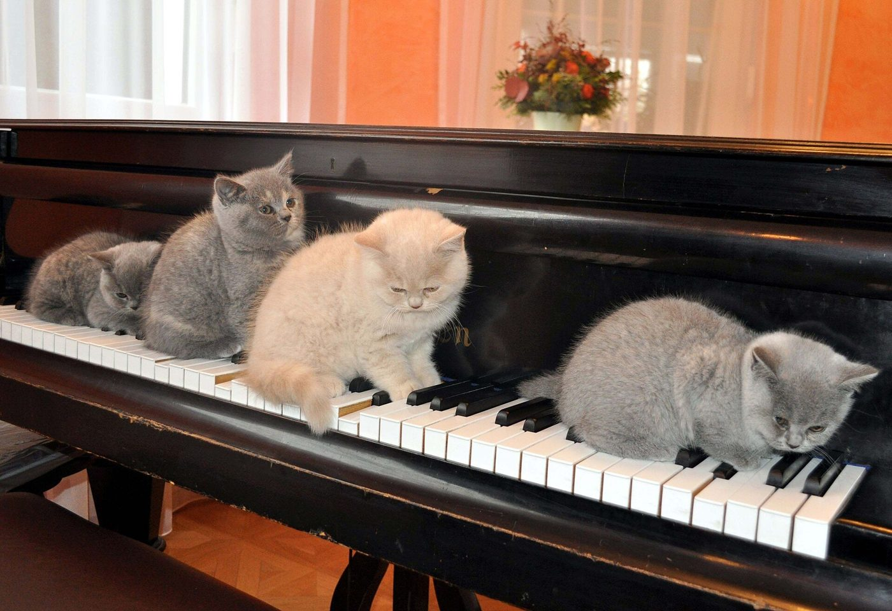
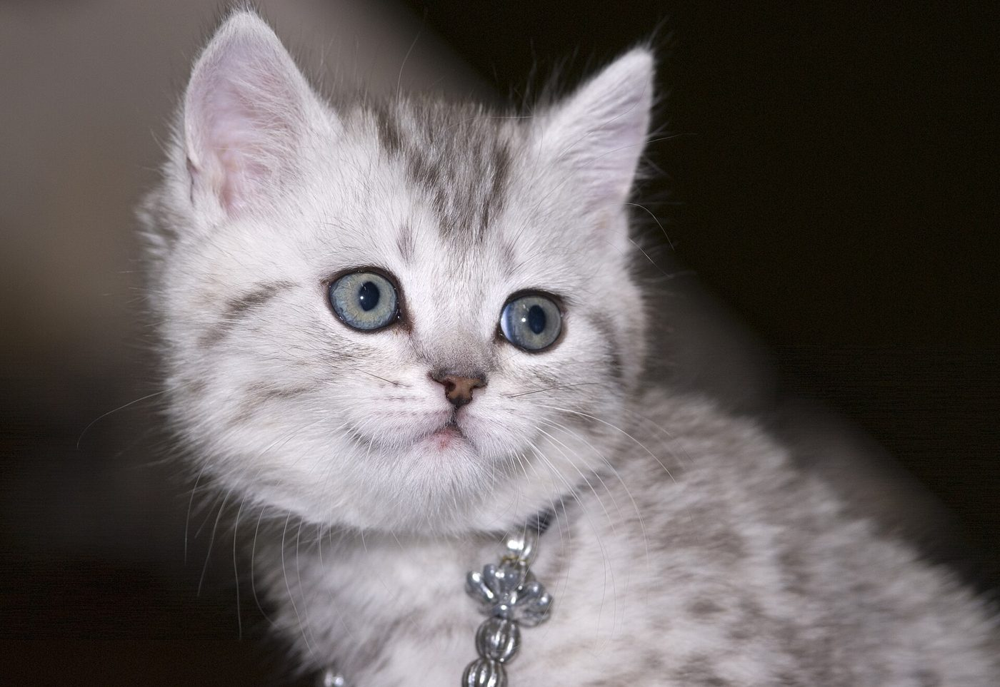

Cattery Viola – Britse korthaar-kittens in Maastricht
Wij zijn een kleine cattery in Maastricht met één ras in ons hart: de Britse korthaar.
Ben je op zoek naar een rustige, aanhankelijke huisgenoot? Dan vertellen we je graag meer over onze Britse korthaar-kittens en hoe een plaatsing bij ons in Maastricht verloopt.

Voorbeeldbeeld – placeholderWaarom een Britse korthaar?
Rustig karakter
De Britse korthaar staat bekend als kalm, evenwichtig en vriendelijk. Ze houden van gezelschap zonder opdringerig te zijn.
Mooie, dichte vacht
De korte, pluche-achtige vacht is kenmerkend voor het ras en vraagt weinig verzorging.
Fijn in huis
Een Britse korthaar past zich goed aan het leven binnenshuis aan en voelt zich thuis in een rustige omgeving.
Een Britse korthaar-kitten van Viola

Voorbeeldbeeld – placeholderWe hebben bewust beperkte plaatsen, zodat elk kitten de aandacht krijgt die het verdient. Wil je weten of er een kitten beschikbaar is of binnenkort komt? Vraag het ons gerust.
De prijs voor een Britse korthaar-kitten is €1200. Op de pagina Tarieven lees je meer.